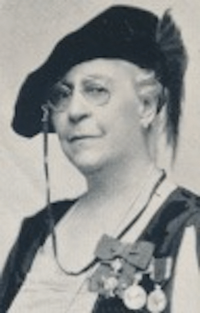

-1-MasterItem.svg)
Stories of Westminster United Church & its People / Page
22
been “liberal,” but it did not equip Minnie to fulfill her original aspirations of becoming a
doctor.
Instead, she followed the course of so many middle-class women of the
19th-century: she became
a teacher. Whatever her private feelings, it seems doubtful that Minnie would
have complained about
the sexism of such constraints, anymore than she would have presented her
doctorial ambitions in
the light of the egalitarian feminist politics that were gaining currency in her
lifetime: she ardently
maintained that the feminine nature is essentially maternal and solicitous, and
that the social and
professional roles befitting women flow organically from that nature. When she
left her teaching post
in Ottawa after only two years — to marry promising lawyer Colin H. Campbell and move to Winnipeg
with him — it freed her to express this “nature” in the dignified role of a leisured lady reformer;
mothering the needy people of Winnipeg and the ideal of the Canadian Nation
itself. To this end, Minnie’s charitable and social engagements were staggeringly
broad: as well as helping to found Westminster with her husband, she served
variously on the Board of the YWCA; as Vice-President of the National YWCA;
as Honorary President of the Women’s Auxiliary of the Anti-Tuberculosis
Society; as a member of the Women’s Musical Club of Winnipeg, the Imperial
Order Daughters of the Empire, and the Western Association; as councilor of
the Winnipeg Red Cross; as an executive of the Christian’s Women Union; as
Secretary of the First Provincial Red Cross; on the board of the Winnipeg
General
Hospital; and no doubt in other official and unofficial capacities elsewhere.
In 1935, in recognition of her community service, she was inducted into the
Order of the British Empire. She was the only Canadian woman to be awarded
the Golden Cross of Merit by Poland for her war relief service. She received the
coronation medals
of Edward VIII, George V, George VI, and the Silver Jubilee Medal of George V.
She died at Port Arthur
(Thunder Bay), Ontario on November 3, 1952 and was buried in St. John’s Cemetery.
For all her accolades, contemporary appraisals of her have tended to dwell
critically on the
imperialist spirit that animated her career, and informed the content of many of
the programs that
she was instrumental in delivering. But, as with the work of so many prominent
reformists of her era,
her backwards tendencies are rather inconveniently fused to a legacy of charity
and progressive

Our Founders